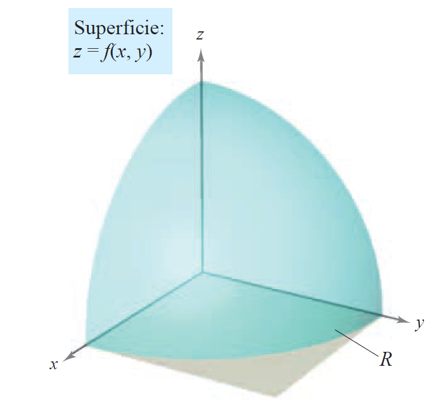
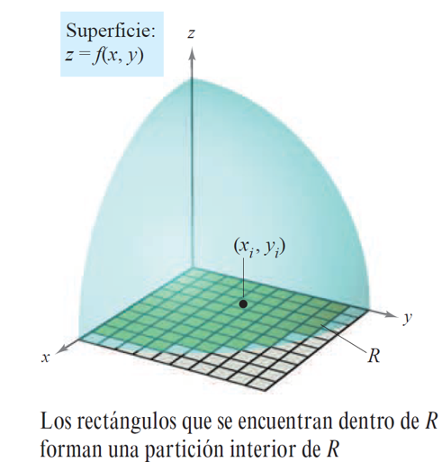
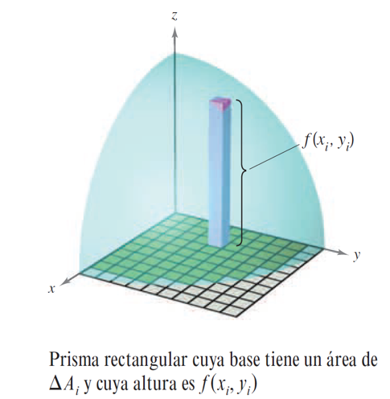
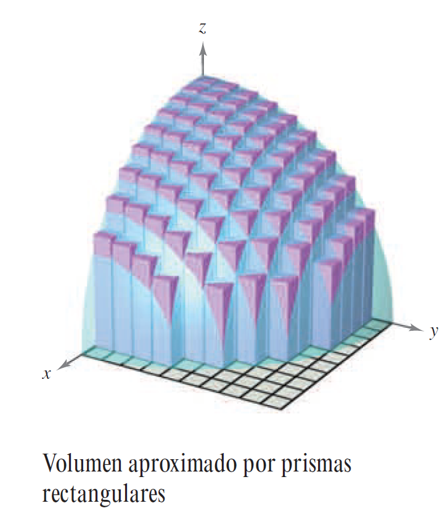
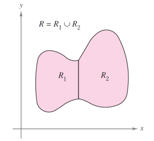
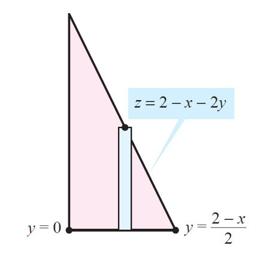
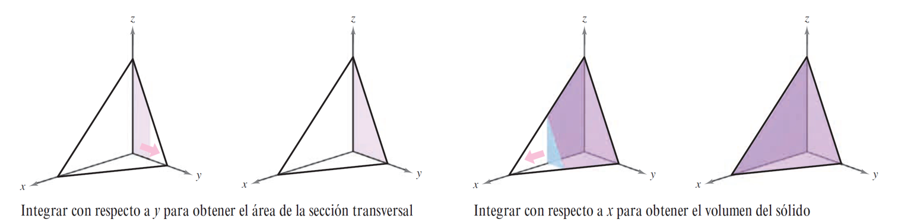
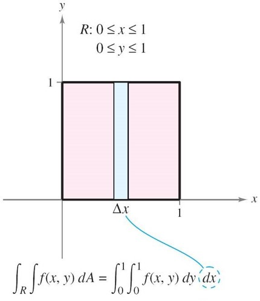
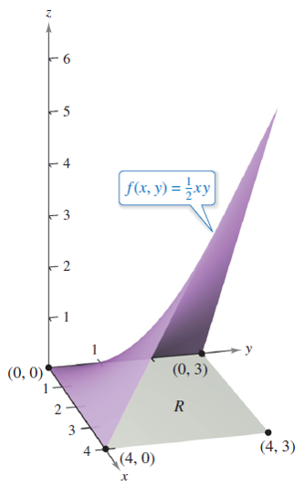

Integrales dobles
Contents
4.3. Integrales dobles#
Empezaremos esta sección introduciendo el concepto de integral doble de una función de dos variables sobre una región plana. Para ello, se muestra su relación con el volumen de una región sólida utilizando un proceso de paso al límite. Tras esta definición formal de integral doble, nos centraremos en su cálculo práctico mediante las integrales iteradas, para lo que se enuncia el teorema de Fubini. Por último, se muestra la aplicación de la integral doble para el cálculo del valor medio de una función de dos variables sobre una región plana.
4.3.1. Integrales dobles y el volumen de una región sólida#
Consideremos una función continua \(f\), que toma valores positivos, sobre una región \(R\) del plano \(XY\). Nos planteamos como objetivo encontrar el volumen encerrado entre la gráfica de \(f\) (es decir, la superficie: \(z=f(x,y)\)) y el plano \(XY\) en la región considerada \(R\), como se muestra en la siguiente figura.
{kind=link}
Como primer paso para ello, empezamos superponiendo una cuadrícula rectangular sobre la región, como se muestra en la figura.
{kind=link}
Los rectángulos que se encuentran completamente dentro de \(R\), forman lo que se llama una partición interna de \(R\), cuya norma, denotada por \(||\Delta||\) siendo \(\Delta\) la partición, se define como la longitud máxima de la diagonal de dichos rectángulos. En adelante, usaremos \(N\) para denotar el número de rectángulos de la partición. A continuación, se elige un punto \((x_i,y_i)\) en cada rectángulo y se forma el prisma rectangular con altura \(f(x_i,y_i)\) como se muestra en la figura.
{kind=link}
Nótese que el volumen del \(i\)-ésimo prisma es \(f(x_i,y_i)\cdot \Delta A_i\), donde \(\Delta A_i\) denota el área del \(i\)-ésimo rectángulo. Por tanto, se puede aproximar el volumen de la región sólida por la suma (de Riemann) de los volúmenes de todos los prismas,
como se muestra en la figura.
{kind=link}
Esta aproximación puede mejorarse refinando la partición, es decir, tomando rectángulos cada vez más pequeños, alcanzando el volumen exacto a través del paso al límite, es decir,
Este valor recibe el nombre de integral doble de \(f\) sobre \(R\) y se denota por \(\displaystyle\int_R\int f(x,y)\,dA\). Este concepto se introduce a continuación para el caso general (es decir, para cualquier función, positiva o negativa), utilizando también las sumas de Riemann.
Definition (Integral doble )
Sea \(f\) una función escalar de dos variables definida en una región cerrada y acotada \(R\) del plano \(XY\). Entonces, la integral doble de \(f\) sobre \(R\) está dada por
siempre que exista el límite. En tal caso, decimos que \(f\) es integrable sobre \(R\).
Os animamos a que echéis un vistazo a la siguiente aplicación en Geogebra de Enrique Paredes, en la que podéis visualizar el resultado de una integral doble.
Property (Condición suficiente de integrabilidad)
Sea \(f\) una función escalar de dos variables continua en una región \(R\) que se puede escribir como unión de un número finito de subregiones no superpuestas que son simples, ya sea vertical u horizontalmente (véase la figura). Entonces existe la integral doble de \(f\) en la región \(R\), es decir, se tiene que \(f\) es integrable sobre \(R\).
{kind=link}
Nota: dos regiones no se sobreponen si su intersección tiene área nula.
Como hemos visto, la definición de integral doble conduce de manera natural a la siguiente interpretación gráfica como el volumen encerrado entre la gráfica de la función, \(z=f(x,y)\), y el plano \(XY\) sobre la región considerada \(R\).
Property (Volumen de una región sólida)
Si \(f\) es integrable sobre una región plana \(R\) y \(f(x,y)\geq 0\ \forall (x,y)\in R\), entonces el volumen de la región sólida que se encuentra sobre \(R\) y bajo la gráfica de \(f\) se calcula como
Las integrales dobles comparten muchas de las propiedades de las integrales en una única variable, como la de linealidad y aditividad respecto al intervalo de integración. En concreto,
Property (Propiedades de las integrales dobles)
Sean \(f\) y \(g\) continuas en una región cerrada y acotada \(R\) del plano, y sea \(c\) una constante.
\(\displaystyle\int_R\int cf(x,y)\,dA=c\int_R\int f(x,y)\,dA\).
\(\displaystyle\int_R\int \left(f(x,y)\pm g(x,y)\right)\,dA=\int_R\int f(x,y) \,dA\pm \int_R\int g(x,y) \,dA\).
Si \(f(x,y)\geq 0\), \(\forall (x,y)\in R\), entonces \(\displaystyle\int_R\int f(x,y)\,dA \geq 0,\quad\).
Si \(f(x,y)\geq g(x,y)\), \(\forall (x,y)\in R\), entonces \(\displaystyle\int_R\int f(x,y)\,dA \geq \int_R\int g(x,y)\,dA,\quad\).
Si \(R\) es la unión de dos subregiones, \(R_1\) y \(R_2\), que no se sobreponen, entonces \(\displaystyle\int_R\int f(x,y)\,dA=\int_{R_1}\int f(x,y)\,dA+\int_{R_2}\int f(x,y)\,dA\).
4.3.2. Cálculo práctico de las integrales dobles#
En esta sección nos centramos en el cálculo práctico de las integrales dobles. Para ello, se enuncia el teorema de Fubini que relaciona, con independencia del orden, la integral doble con las iteradas.
Theorem (Teorema de Fubini )
Sea \(f\) una función escalar de dos variables continua en una región plana \(R\).
Si \(R=\left\{(x,y)\in \mathbb{R}^2/ a\leq x\leq b,\ g_1(x)\leq y\leq g_2(x)\right\}\), donde \(g_1\) y \(g_2\) son continuas en \([a,b]\), entonces
Si \(R=\left\{(x,y)\in \mathbb{R}^2/ c\leq y\leq d,\ h_1(y)\leq x\leq h_2(y)\right\}\), donde \(h_1\) y \(h_2\) son continuas en \([c,d]\), entonces
Mira la aplicación de Geogebra de Juan Pablo Tipanluiza Muela para entender mejor este corte por secciones. Nosotros lo intentamos detallar sobre un ejemplo a continuación.
Example
Se considera la región sólida delimitada por el plano \(z=f(x,y)=2–x–2y\) y los tres planos de coordenadas, como se muestra en la figura

Cada sección transversal vertical paralela al plano \(YZ\) es una región triangular cuya base tiene una longitud de \(y=\dfrac{2–x}{2}\) y cuya altura es \(z=2–x\), donde \(x\in[0,2]\). Utilizando las fórmulas que relacionan los volúmenes y las áreas con las integrales, se deduce el teorema anterior para este caso particular:
Nota: El área de cada sección trasversal \(A(x)\) se puede calcular por integración como se muestra en la figura y en la igualdad de arriba, o a través de la fórmula del área de un triángulo.
{kind=link}
Para entender mejor este procedimiento, resulta de ayuda imaginar la integración como dos movimientos de barrido. Para la integral interior, una línea vertical barre el área de la sección transversal. En la integral exterior, la sección transversal triangular barre el volumen, como se muestra en la siguiente figura.
{kind=link}
A continuación, vamos a calcular esta integral pero con la ayuda de la librería Sympy.
import sympy as sp
x, y = sp.symbols('x y', real=True)
f = sp.Lambda((x,y),2-x-2*y)
volumen = sp.integrate(f(x,y), (y, 0, (2-x)/2), (x, 0, 2))
display(volumen)
Example
Se considera ahora la integral doble \(\displaystyle \int_R\int \left(1-\dfrac{1}{2}x^2-\dfrac{1}{2}y^2\right)\,dA\) siendo \(R=[0,1]\times[0,1]\). La región \(R\) es un cuadrado, que es simple tanto vertical como horizontalmente y se puede utilizar cualquier orden de integración. Elegimos \(dy\,dx\) colocando un rectángulo vertical representativo en la región como se muestra en la figura.
{kind=link}
Esto produce lo siguiente:
A continuación, calculamos esta integral pero con la ayuda de la librería Sympy.
import sympy as sp
x, y = sp.symbols('x y', real=True)
f = sp.Lambda((x,y),1-sp.Rational(1/2)*x**2-sp.Rational(1/2)*y**2)
res = sp.integrate(f(x,y), (y, 0, 1), (x, 0, 1))
display(res)
4.3.3. Valor medio de una función#
El valor medio de una función de variable real \(f\) en el intervalo \([a,b]\) es
Este concepto se extiende al caso de una función de dos variables \(f\) sobre la región del plano \(R\) como se muestra en la siguiente definición.
Definition (Valor promedio )
Si \(f\) es integrable sobre la región plana \(R\), entonces el valor medio de \(f\) sobre \(R\) es
Example
Calculamos a continuación el valor medio de \(f(x,y)=\dfrac{1}{2}xy\) sobre la región del plano \(R\) dada por un rectángulo con vértices \((0,0)\), \((4,0)\), \((4,3)\) y \((0,3)\). Para ello, observamos que el área de la región rectangular \(R\) es \(4\times 3=12\), y que los límites para \(x\) e \(y\) son \(0\leq x\leq 4\) e \(0\leq y\leq 3\), como se muestra en la figura
{kind=link}
Por tanto, el valor medio es
A continuación, obtenemos este mismo valor medio con la ayuda de Sympy.
import sympy as sp
x, y = sp.symbols('x y', real=True)
f = sp.Lambda((x,y),1/12*1/2*x*y)
val_m = sp.integrate(f(x,y), (y, 0, 3), (x, 0, 4))
display(val_m)